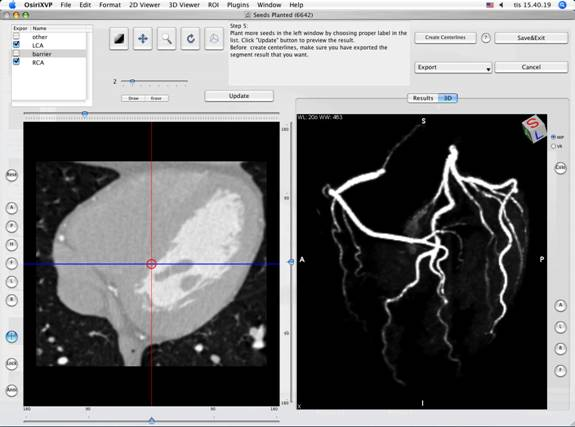
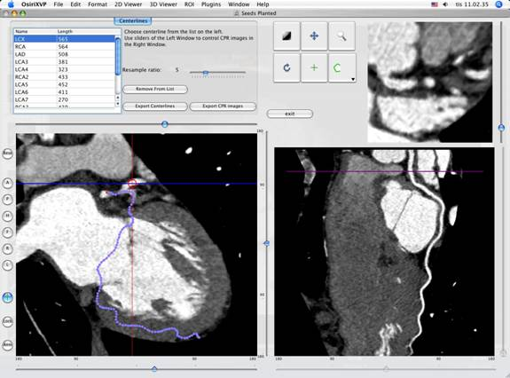

Quick Guide of CMIV CTA Plug-in
Copyright 2007 © Center for
Medical Image Science and Visualization(CMIV),
Part 1 Install:
Download the plugin package from OsiriX website: http://homepage.mac.com/ rossetantoine/ osirix/, Unpack the zip file, and copy the “CMIV_CTA_TOOLS.plugin” file to “/Library /Application Support /OsiriX/Plugins /”
Part 2 Coronary CTA image processing with Wizard
Open a coronary CTA series (if you do not have such images, download the sample series from OsiriX website: CardiacCT.sit ), and run the wizard by choosing “Wizard For Coronary CTA” from the plugins menu.

Fig 1. Plugin Menu
2.1 step 1 VOI (volume of interest) Definition
By dragging the four apices of the green boxes you can define the area of the coronary arteries in 3 direction (axial, sagittal and coronal). Click “Next Step” after you finish the VOI definition.

Fig 2. VOI Definition Window
2.2
step 2 Place Virtual Catheter in LCA
In this 2D Views interface, three views are organized together to form an arbitrary angle 2D Orthogonal MPR system. The red line of the cross in “main MPR view” represents the section line of “vertical MPR view”, and the blue one represents the section line of “horizontal MPR view”. The “main MPR view” controls the direction of the other two views. You can rotate the reslice plane of “main MPR view” around x axis (blue line), y axis (red line) by scrolling the sliders under the view and on the right side, rotate it around z axis by rotating the cross, and translate the reslice plane back and forth by scrolling the upper slider.

Fig. 3. 2D View user interface
Scroll and rotate the “Main MPR window” to locate the root of LCA, and then use your mouse to draw an arrow from the root pointing to the distal end. Now the “Vertical MPR” is reconstructed along the axis of the arrow, and the “Horizontal MPR” is showing the cross section of the root. You can adjust the arrow’s direction in the “Vertical MPR” if necessary, and move and zoom the circle in the “Horizontal MPR” view to include the whole cross section of the artery and the circle should be a little bit bigger than the section.

Fig
4 Virtual Catheter in LCA
2.3 step 3 Place Virtual Catheter in RCA
Do it in the same way as you have done in last step. The arrow should be green this time.
2.4 step 4 Mark unwanted Structures
Your mouse now will work as a yellow marking pen, use it to draw some freehand curves in those structure that you do not want to be included in the results. It is not necessary to plant those seeds very precisely, just cover some high intensity areas, such as ventricles, aorta, vertebra, sternum and veins of liver (see Fig. 5). Click “Run Segmentation” to go to the next step after you finish the “seeds planting”.

Fig
5 Mark unwanted Structure
Note: In any step from step 2 to step 4, if you choose some general tools such as window setting, zoom and rotate tools, before you can go on to plant more seeds, you will have to click “Continue Planting Seeds” button in the “Tips” area.
2.5 Step 5 Interactively Refine the Segment results
After first round seed planting now you will get a preliminary segment result shown as MIP/VR images in the right window of Preview Window (like Fi. 6). You can also view the segment results in 2D views (like Fig 7).

Fig 6. Preview Segment Results In 3D

Fig 7. Preview Segment Results In 2D
Sometimes those results are good enough, but sometimes there will be some high intensity structure hanging around the vessels, or some parts of coronary arteries are still missing. By choosing proper label from the components list, you can use your mouse to draw more markers (“plant seeds”) on those missing parts or unwanted structures. After click the “Update” button, you will be able to see the new result in seconds.
Notice: Before you go to next step by clicking the “ Create Centerlines” button, you need export your results using the popup menu at “Export” button, so you will be able to view them latter in OsiriX 3D views. Those results exported will be saved in memory only until you use “Save Results” of this plugin to save them.
2.6 Step 6 Centerlines Extraction and CPR along the Centerlines
The centerline extraction is a totally automatic procedure, but it might take several minutes to calculate the results. After that the wizard will lead you into a CPR view interface. In the left top list there are candidate centerlines. With default centerline extraction setting, all branches which is longer than 10mm will be included in the list (you can change this threshold by click “?” button nearby the “Create Centerlines” button), and the list is sorted by the length of the branches in descending order.

Fig 8. Centerline List and CPR image
You can rotate the CPR around the centerline by rotating the “main MPR view”. The centerline will be projected into current reslice plane, and the CPR view represents a curved surface, orthogonal to the main MPR view in each point of the curve. Choose “straightened CPR” option will change the curved MPR view into a straightened CPR view, to rotate it you can use the slider under the view directly. When you scroll the right top view, it will give you the cross section images along current projected centerline (in curved MPR mode) or the cross section images along the 3d centerline (in straightened CPR mode).
2.7 Step 7 Save Results to the Database
Choose the window that contains the images you want and use the “Save Results” tool in the plugin menu.

Fig 9. Save results into the OsiriX database